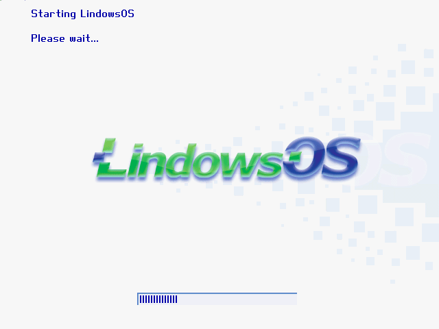

There once was a time when desktop adoption was seen as the most important goal for Linux. Since then, Linux has come to dominate the market of supercomputers, web servers, mobile devices, network devices, and IoT, but most desktop computers are still running Windows. While there are millions of Linux desktops, it's still a minority. Sure, Linux has succeeded, but not in a way people in the early 2000's had anticipated.
A certain category of people thought the best way to gain desktop adoption was to mimic Microsoft Windows as much as possible. Sometimes it took benign forms, such as making Windows-like themes for window managers, but some took it to the exreme.
And then there was Lindows... The distribution that failed to gain any popularity with either Windows users or free software advocates. For Windows users, it was not a drop-in replacement because not one OS in the world can be a drop-in replacement for another. For free software advocates, it was a blatant disregard of free software ideals because it mixed free and proprietary software arbitrarily.
Its name was an obvious lawsuit magnet, and it sure happened, but the lawsuit was settled out of court and apparently got the project developers $20M, which didn't seem to help it much. It was since then renamed to Linspire/Freespire, sold to different companies multiple times, and is now owned by PC/OpenSystems LLC. Freespire looks like yet enother Ubuntu derivative to me, though I haven't looked deep. Linspire costs at least $80 and I'm not $80 interested in it. In any case, that distro has little if anything in common with the original Lindows, and should not be judged by this review!
In this review we are going to take a look at the last release actually named “Lindows”, version 4.0 from 2003. I've heard of it at the time, but never tried it because I thought it was ridiculous. Let's see if my judgement was correct.
Installation images are available from WinWorldPC (its team is doing a great work keeping old OSes available!). It boots in VirtualBox with standard Linux 2.4 setup just fine (PIIX3 chipset, IDE drives, PCNet NIC). We are met with a custom graphical bootloader:
The installer loads and offers two options, to use the entire drive, or to setup partitions by hand.
Naturally, I picked the latter option, but the first surprise was lurking there:
That's right, you can only pick a drive or a partition from a list. There is no functionality for creating or editing partitions, unlike in most other distros from any era, so the only way one could possibly install it alongside another OS would be to create partitions beforehand. I didn't check if it was capable of detecting Windows installations and setting up the bootloader accordingly.
Another surprise awaits at the next screen:
The hostname option is fine. The password though... which user's password are we asked for? The root password? Will we have an option to add a non-root user?
Uhm, no. The next screen just asks to confirm the settings.
All we can do is to click “Yes” and watch the progress bar.
It looks like an obvious Windows XP installer clone with a different layout. At least it's not saying “Try the easiest Lindows® yet”
The next screen is advertising Click'n'Run, the package manager. Frankly, at the time the idea of installing packages from a remote server was still relatively new, though graphical frontends for package managers already existed. Lindows Click'n'Run promised a one stop shop for everything including proprietary software.
Installation is now complete and we can reboot the machine.
By the time installation was complete, I also realized that it didn't offer to choose the interface language, even though many other distros already had that option by the time.
The machine reboots, and we are met by the same graphical bootloader as in the live CD:

Hitting the Escape key does nothing. There's no way to see the boot messages during normal boot. Then again, Plymouth didn't exist at the time, there was no standard graphical boot program yet, and everyone who wanted one had to invent their own.
All we can do is to watch the progress bar. When it boots, we are at the login screen... with no username field!
You mean, seriously? What user are we going to login as? Let's type the password in and see.
Looking at the splash screen, we already know that it's using KDE:
The first thing we see when it loads is the EULA dialog:
I would have expected to have an option to review the EULA before I let the installer wipe out my hard drive. At least in some jurisdictions, installing software may be considered equal to accepting its EULA! The EULA mentioned that Lindows is not affiliated with or endorsed by Microsoft, as if there could be any confusion.
Before we can start doing anything, we are made to watch a tutorial. Windows style again.
Exiting the fullscreen mode reveals an ugly truth: the tutorial is Flash-based.
There isn't much software installed by default. In fact, almost nothing is installed by default, the assumption was that everything will be installed via Click'n'Run. All dial-up users were sure grateful (that was 2003, remember!). Click'n'Run package repository servers are no longer available, and clearly wouldn't have packages for a 2003 version in 2018, but let's start Click'n'Run just to see it's UI:
Apparently Click'n'Run wasn't mean to handle the situation with inaccessible repository gracefully because a minute later it segfaults:
The menu is made to look as Windows-like as possible. In every section, there's a link to Click'n'Run. How many programs in each category it could actually offer is impossible to find out by now.
Well, now let's check if our worst fears were true. And let's do it the Windows... I mean, Lindows way, and open the Lindows Control Panel (which I think is just a renamed KDE Control Center).
Oh yes! The user is root! It uses root login by default, without an option not to do it, without any warning message about possible consequences!
So, what about i18n? There's a country option in the control panel, but it has no effect. There are no locales other than en_US in the system.
If you create a user, the login manager starts displaying other accounts, though it also renames root to Administrator for some reason. There's also no option to create a user in the control panel, even though a graphical user manager from KDE is installed.
Some Windows-like directories such as “My Documents” are created inside the home dir:
Inside the “My Documents” directory, there are some bonus files. Some music samples and a letter:
This is what's inside the Music directory:
The Thankyou.mp3 simply says “Thanks you for choosing Lindows OS”. The second file is more interesting.
It contains the “Meet Me” song from the “Can't Take It With You”
album by Emily Richards.
Turns out Emily Richards releases her music under CC-BY-NC license (non-free, but still).
There's no indication that the song in question is under a free license however, so I wonder if they had a special agreement with her.
And then we find what seems to be a rather personal touch, a letter from Jack Donaldson, an assistant coordinator:
There's Mozilla renamed to “Lindows Internet Suite”:
Of course, the change is very superficial:
One relic from the past that many people may not even remember: it was Macromedia Flash Player back then, not yet Adobe Flash Player.
Other than that, there's not much software to talk about. Out of the box, without working Click'n'Run it doesn't make a complete working environment. Wine isn't installed by default and there's no out of the box integration with Windows binaries, though I think they might have done it in later versions. But, I guess we have seen enough. As we shutdown the machine, we see a custom splash screen again: